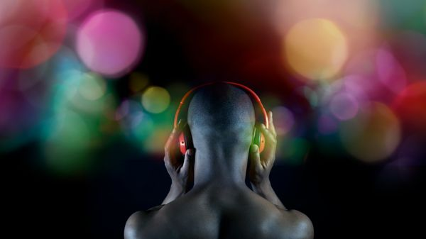
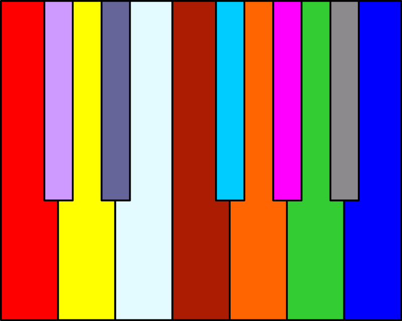
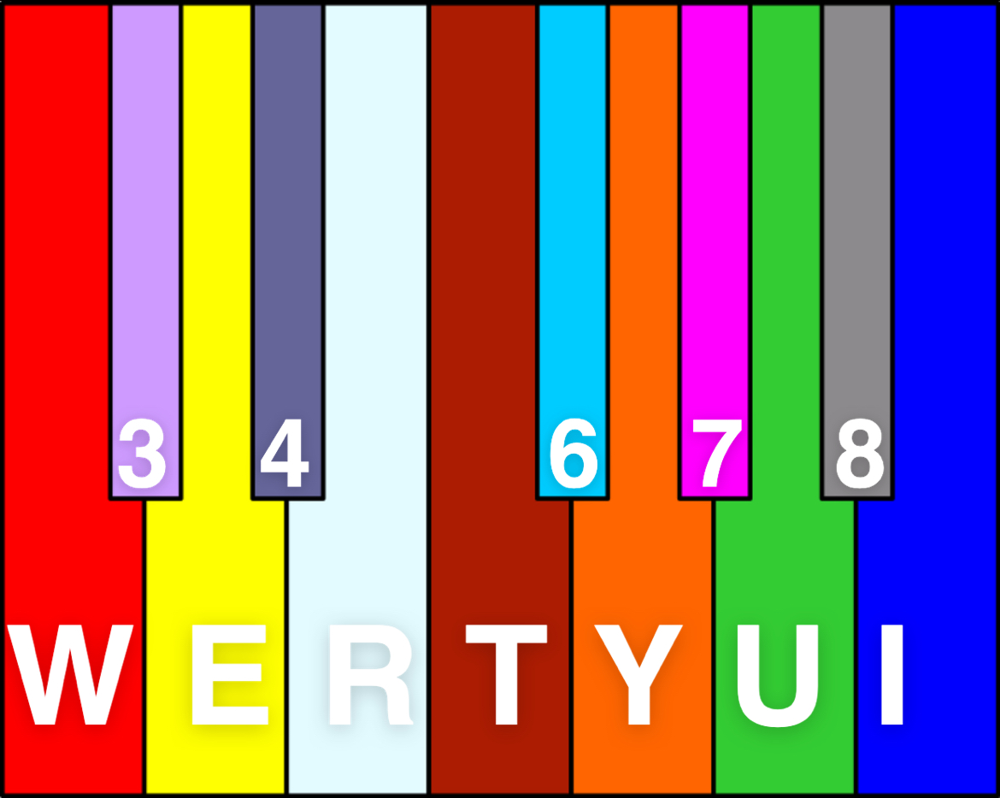

Welcome to the World of Chromesthesia!
What is chromesthesia?
Chromesthesia or sound-to-color synesthesia is a type of synesthesia in which sound involuntarily evokes an experience of color, shape, and movement

I was inspired by this image of the circles on the black background and used this as a guide for my visuals.

I used this image to match each key's audio to a certain color.

These are the letters and numbers on the keyboard that I binded to each note on the piano, which are what colors will show up when the key is pressed.
I have also added an extra C note on the "o" key to complete the octave.